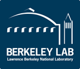
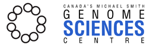

Present Funding (MGI)
The McDonnell Genome Institute at Washington University in St Louis is one of three large-scale sequencing centers in the United States funded by the National Institutes of Health (NIH) and National Human Genome Research Institute (NHGRI). I am currently supported by a Young Investigator Award from the Cancer Research Foundation, a Translation Grant from the V Foundation, a Transition Career Development Award (K22) from the National Cancer Institute (NCI), and an Early-Stage Development of Informatics Technologies for Cancer Research and Management (U01) award from the NCI.
Past Funding (LBNL)
The Lawrence Berkeley National Laboratory is a U.S. Department of Energy national laboratory, located at and managed by UC Berkeley. In addition to those supporting organizations, my research at LBNL was supported by a fellowship from the Canadian Institutes of Health Research (CIHR). I also participated in several projects that received funding from Stand Up To Cancer (SU2C).
Past Funding (GSC)
Canada's Michael Smith Genome Sciences Centre is one of the 8 research laboratories within the BC Cancer Research Centre (BCCRC). The BCCRC is the research arm of the BC Cancer Agency and is funded by the exceptional efforts of the BC Cancer foundation and its many donors. In addition to these supporting organizations, I received graduate funding from the Canadian Institutes of Health Research (CIHR), Michael Smith Foundation for Health Research (MSFHR) and Natural Sciences and Engineering Research Council of Canada (NSERC). The University of British Columbia, the Faculty of Medicine and the Department of Medical Genetics have all contributed to my research through scholarships and travel awards.
 |
||
|  | ||
|  | ||